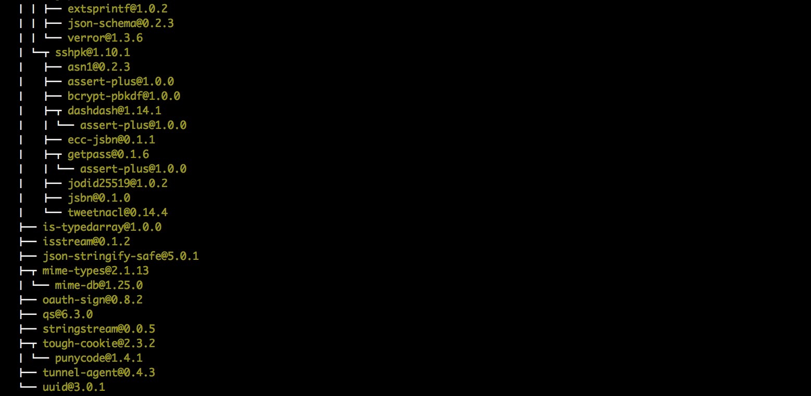
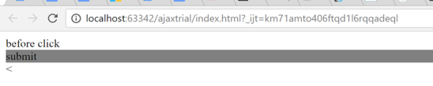
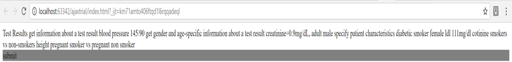

Form Renderer: Instructions
The prototype builds heavily upon Form Renderer experiments 2,3 and 4. Our prototype first scrapes text data from the Wolfram Alpha site, exports it to a text file, the contents of which then appear on a site after the user clicks a button, without the entire site reloading.
Inside scraper.js file, the line: url = 'https://www.wolframalpha.com/examples/MedicalTests.html'; - determines which is to be the target website, while the line: $('div.col2').each(function(i, element){ - determines the id of the data to be pulled.
Node,js and Cheerio have to be installed on your computer. To install Node.js, download it from this link. Afterwards, for mac users, run the command: sudo npm install -g request cheerio - to install Cheerio, otherwise, check this link - inside the repository of the project file. You should have all packages installed as follows:
The Node web-scraper file (scraper.js) must be compiled as a separate file, prior to running the index file. To compile the file, run this command in your terminal: node ajaxtrial/scraper.js.
The terminal should give response ‘the file was saved’ showing the text has been pulled from the target website and saved in the text file.
After installing the Node library and upon running index.html, the user is presented with this view:
After clicking, with this view, showing the text from the aforementioned saved text file:
Performance
Obviously, the fact that the node file must be compiled separately is an issue, however the prototype works as intended, pulling data to a text file, then uploading that text onto a webpage.